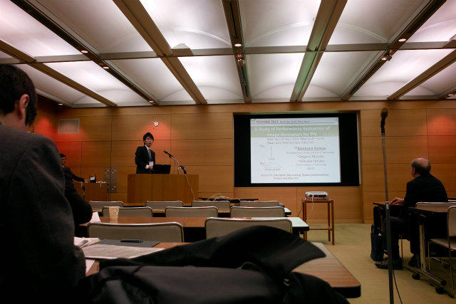
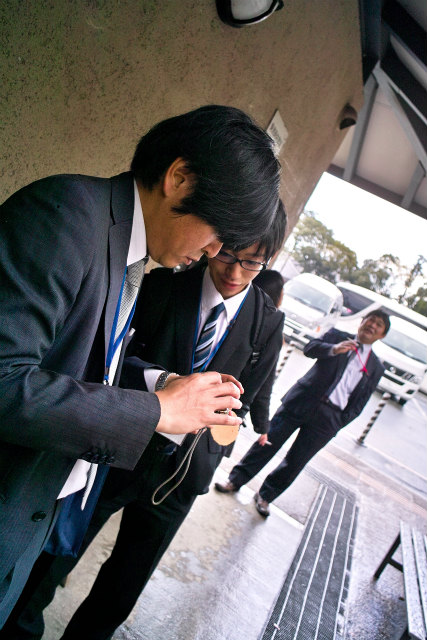

| ・FLUCOME 2013-1 ＠奈良(H25.11.18-23) | |||
|
2011年の助教の人発表から2年経ち、今回はN島くん、I上くん、K井くん3人の発表です。まずはI上くんの発表"A Study of Performance Evaluation of Image Derotators for PIV"が最初です。 |
|||
|
I上くんが最初 |
パソコンチェック | ||
|

発表中 |
質疑応答中 | ||
|
task合流、I上くんはホッとしてますね |
やばそうな看板 | ||
|
まずは小手調べ |
秘密結社「鹿の角」後継者のtaskピンチ | ||
|
小学生の群れで鹿をまくtask |
おびえるtask、けんちゃん半笑い | ||
|

HPOだ！ |
こうやって撮ってるんですね | ||